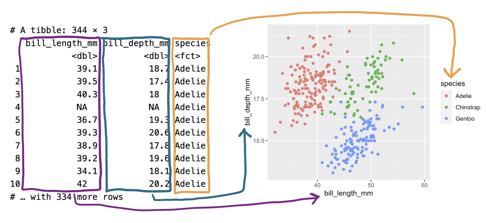
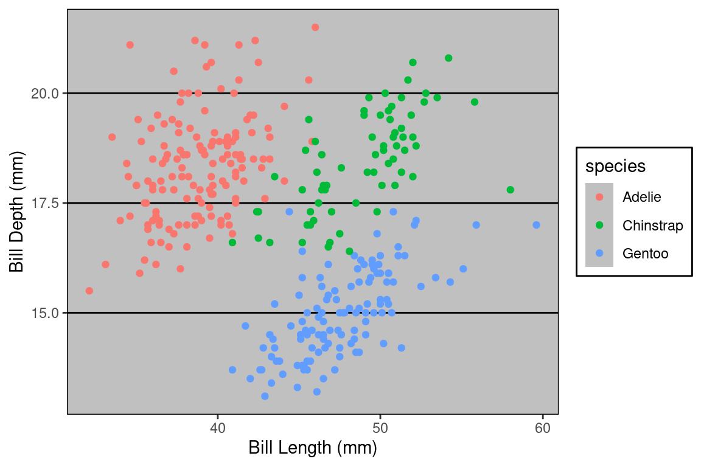

A Grammar of Graphics
A unified framework for constructing statistical graphics.
The Grammar of Graphics is an abstract framework of data visualization and so far we’ve kept things abstract. But to construct your own plots you’ll need to be able to implement them in software. We are fortunate to have a translation of the grammar into readible, flexible, and powerful code: the ggplot2 package in R (found within library(tidyverse)).
The basic template for describing a plot in code using ggplot2 is:
ggplot(DATAFRAME, aes(ATTR = VAR)) +
geom_GEOMETRY()Where DATAFRAME is the name of your data frame, ATTR is the aesthetic attribute that you’ll be using, VAR is a variable in your data frame, and GEOMETRY is the name of a geometry.
Tip
This tutorial features live code cells built right into the web page. As you come across a new code cell, press this button to run the code.
These code cells are editable just as if you were working at the console in RStudio, so you’re encouraged to modify the code, run it, and see what happens.
Building a ggplot
Let’s code up the penguin plot bit by bit.
The ggplot() function takes as its first argument a data frame. By itself, there’s not much to look at; it just creates our blank canvas.
Let’s now indicate how we want to map our aesthetic attributes to variables in that data frame by including them inside the aes() function as the second argument to ggplot().
Now we’re getting somewhere. Our axes are now set up with labels and values that are determined by looking into the data frame and checking the range of each variable. Note that we can pass more than one aesthetic mapping inside aes(), we just need to separate them with a comma.
All that is left is to actually put the observations on the plot by declaring what geometry we want. Let’s express each penguin as a point by using + to add on a new layer called geom_point().
When you run this code, R gives you a Warning. These warnings appear when R did something that isn’t a problem necessarily, but thinks you should know about. In this case, it “removed 2 rows containing missing values or values outside the scale range”. In other words, there were two penguins who didn’t have a recorded value for either the x or the y, so there are 342 points on this plot, two less than the 344 rows in the data frame.
The plot that is created by this combination of aesthetic mappings and the point geometry is called a scatter plot. This is a good choice of plot for visualizing the relationship between two numerical variables. The original penguin plot, though, visualizes the relationship between three variables. To complete our plot, let’s add in that third variable by mapping species to the color aesthetic attribute.
Beautiful!
Exercises
Tip
The code block that follows is an example of an exercise code block. Modify the code block to achieve the task laid out in the exercise. When you get it correct, it will praise your fine programming skills. If you get stuck, use the “Solution” button.
A different penguins plot
The code cell below creates the penguins plot above. Modify the code to visualize the relationship between the flipper length of penguins on the x-axis (flipper_length_mm) and their body bass on the y-axis (body_mass_g).
ggplot(penguins, aes(x = flipper_length_mm,
y = body_mass_g,
color = species)) +
geom_point()
ggplot(penguins, aes(x = flipper_length_mm,
y = body_mass_g,
color = species)) +
geom_point()Communicating with Graphics
At this point in the course, you have a bevy of different types of statistical graphics under your belt: scatterplots, histograms, dot plots, violin plots, box plots, density curves, and bar plots of several kinds. You also have a broad framework to explain how these graphics are composed: the Grammar of Graphics. But to what purpose? Why plot data? For whom?
Every time you build a plot, you do so with one of two audiences in mind.
- Yourself.
- Someone else.
The process of building understanding from a data set is one that should be driven by curiosity, skepticism, and thoughtfulness. As a data scientist, you’ll find yourself in conversation with your data: asking questions of it, probing it for structure, and seeing how it responds. This thoughtful conversation is called exploratory data analysis (or EDA).
During EDA, the aim is to uncover the shape and structure of your data and to uncover unexpected features. It’s an informal iterative process where you are your own audience. In this setting, you should construct graphics that work best for you.
At some point, you’ll find yourself confident in the claim that can be supported by your data and the focus changes to communicating that claim as effectively as possible with a graphic. Here, your audience shifts from yourself to someone else: other scientists, customers, co-workers in a different part of your company, or casual readers. You must consider the context in which they’ll be viewing your graphic: what they know, what they expect, what they want.
In this tutorial we’ll focus on three ways to hone the message of your data visualization.
- Mapping versus setting
- Labels for clarity
- Choosing a theme
- Annotations
We will use two running examples: a line plot of the number of christenings in 17th century London which were collected by a man named John Arbuthnot, 1 and a scatter plot showing the bill sizes of penguins near Palmer Station, Antarctica2.
Mapping vs Setting
Once you have your first draft of a plot complete and you’re thinking about how to fine tune it for your audience, your eye will turn to the aesthetic attributes. Is that color right? What about the size of the points?
Consider the first draft of the penguins plot above. It might feel a bit drab to have a large mass of points all in black, the same color as the labels and surrounding text. Let’s make the points blue instead to make them stand out a bit more. Click “Run Code” to see the new plot.
This is . . . unexpected. Why did it color the points red? Is this a bug?
What we’ve stumbled into is a subtle but essential distinction in the grammar of graphics: mapping vs setting. When you put an aesthetic attribute (x, color, size, etc.) into the aes() function, you’re mapping that attribute in the plot to whatever data lives in the corresponding column in the data frame. Mapping was this process:

That’s not what we set out to do here. We just wanted to tweak the look of our aesthetic attributes in a way that doesn’t have anything to do with the data in our data frame. This process is called setting the attribute.
To set the color to blue3, we need to make just a small change to the syntax. Let’s move the color = "blue" argument outside of the aes() function and into the geom_() function.
Ah, that looks much better!
Color isn’t the only aesthetic attribute that you can set. Let’s increase slightly the size of our points by setting the size to three times the size of the default.
It’s not clear that that improves the readability of the plot - there is more overlap between the points now - but the setting worked. One thing we might do to get more visibility on some of the points that were clumped is to use the alpha mapping!
How would it have looked if instead we had mapped the size? When you map, you need a map to a column in your data frame, so let’s map size to species.
We’ve made a mess of our plot now, but it is clear what happened. R looked inside the species column, found a categorical variable with three levels and selected a distinct size for each of those levels.
All in all, this is another area in which the grammar of graphic guides clear thinking when constructing a graphic. The aesthetic attributes of a plot can be determined either by variability found in a data set or by fixed values that we set. The former is present in all data visualization but it’s the latter that comes into play when fine-tuning your plot for an audience.
Adding Labels for Clarity
You may have noticed that ggplot2 pulls the labels for the x-axis, the y-axis, and the legend directly from the names of the variables in the data frame. This results in labels like bill_length_mm, which is no problem when you’re making plots for yourself - you know what this variable means. But will an outside audience?
You can change the labels of your plot by adding a labs() layer.
Axis and legend labels should be concise and often include the units of measurement. If you find them getting too wordy, know that you can clarify or expand on what is being plotted either in a figure caption or in the accompanying text.
Speaking of captions, those a can be added too, as well as a title.
The title of a plot is valuable real estate for communicating the primary story of your plot. It should highlight the most important structure in the data. In the plot above, there appears to be little correspondence between bill length and bill depth. Of course, that changes when we map species to color. Let’s make that plot and title it accordingly.
The practice of using the plot title to convey the main message of the plot is used to powerful effect by the visualization experts at the British publication, The Financial Times4. They have developed a wealth of visualizations to help readers understand what is happening with public health throughout the pandemic. The sobering graphic below uses the title to guide the viewer to the most important visual structure in the plot: the yawning vertical gap between dosage rates between high and low income countries.

Choosing a Theme
What piece of software did I use to produce the following plot?

If you said “Excel”, you are correct! Well… it is Excel in spirit. What makes this plot look like it was made in Excel are a series of small visual choices that were made: the background is a dark gray, there are black horizontal guide lines, and the plot and the legend is surrounded by a black box. Small decisions like these that effect the overall look and feel of the plot are called the theme. The theme used here belongs to the ggthemes library. Here’s the code used.
Let’s look at a few more. Do they look familiar?
They are, from top to bottom, a theme based on The Wall Street Journal, The Economist, and one of the themes built into ggplot2 packaged called bw for “black and white” (there are no grays). The ggplot2 library has several themes to choose from and yet more live in other packages like ggthemes. To use a theme, all you need to do is add a layer called theme_NAME (e.g. for the black and white theme, use theme_bw()).
Themeing your plots is an easy way to change the look of your plot. Tinker with a few different themes and considering adding them to your labs5. But, as with all design decisions around graphics, be sure to think about your audience. You might find the Excel aesthetics ugly and dated, but will your audience? If you’re presenting your plot to a community that works with Excel plots day in and day out, that’s probably a sound choice. If you are preparing a plot for submission to a scientific journal, a more minimalist theme is more appropriate.
Annotations
In the same way that a title highlights the main message of a plot, you can rely upon visual cues to draw attention to certain components or provide helpful context.
In the plot below, we visualize the change in total births recorded in London, England in the 17th century, stored in the arbuthnot data frame. Although these records seem very simple, they actually capture a wealth of historical information. We can add this information to our plot by adding annotations.
Were you curious about what caused that dip in the number of births in 17th century London? It happens to correspond to the duration of the English Civil War, when the monarchy was overthrown by a dictator named Oliver Cromwell. This very important context can be conveyed by adding a text label and a line segment through two new annotate() layers.
Within ggplot2, annotations are a flexible way to add the context or comparisons that help guide readers in interpreting your data. You can add text, shapes, lines, points. To learn more, consult the documentation6.
So if the drop after 1642 corresponds to the English Civil War, what about the spike down around 1666? What about 1703? If you’re curious, explore Wikipedia to find out and add those events as annotations to this plot.
Summary
Over the coming weeks, you’ll get lots of practice with ggplot2. It is an incredibly flexible and powerful piece of software that helps you not just build plots, but think about each of the design decisions that you make. Throughout your journey it is helpful to have a source of documentation to learn about the functionality of the tool. The help files on each function are only so useful. A better option is the official ggplot2 documentation: https://ggplot2.tidyverse.org/.
There are two main uses for data visualization. The first is as part of exploratory data analysis, when you are constructing plots for yourself to better understand the structure of the data. When you’re ready to communicate with an outside audience using graphics, more thought is needed: you must think about the difference between mapping and setting, the use of labels for clarity, choosing a theme, and emphasizing elements of the plot using annotations.
Footnotes
For data documentation, see the
stat20dataR package.↩︎For data documentation, see the
palmerpenguinsR package.↩︎To see the vast (and somewhat strange) palette of color names that R knows, type
colors()at the console.↩︎Visualization drawn from the excellent collection of graphics at the Financial Times Covid Tracker https://ig.ft.com/coronavirus-vaccine-tracker/.↩︎
Explore the themes available within
ggplot2by reading the documentation https://ggplot2.tidyverse.org/reference/ggtheme.html. For the additional themes held in theggthemespackage, read this: https://yutannihilation.github.io/allYourFigureAreBelongToUs/ggthemes/.↩︎Documentation for annotation layers in ggplot2: https://ggplot2.tidyverse.org/reference/annotate.html.↩︎